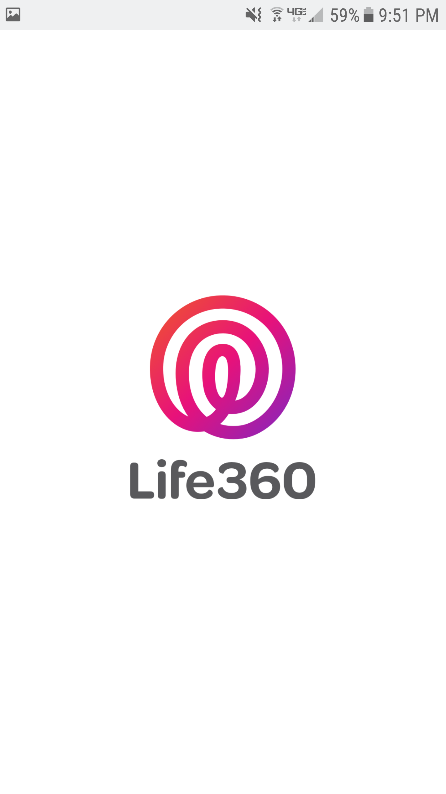
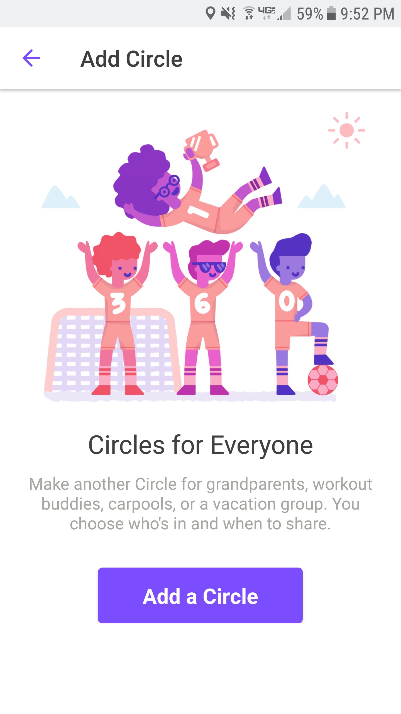
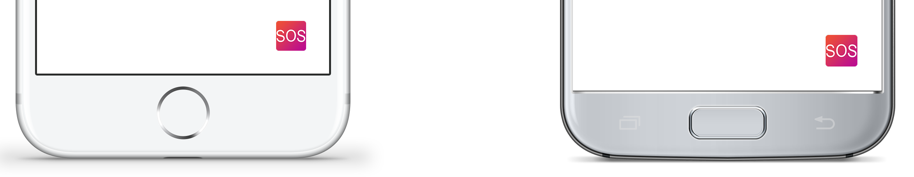
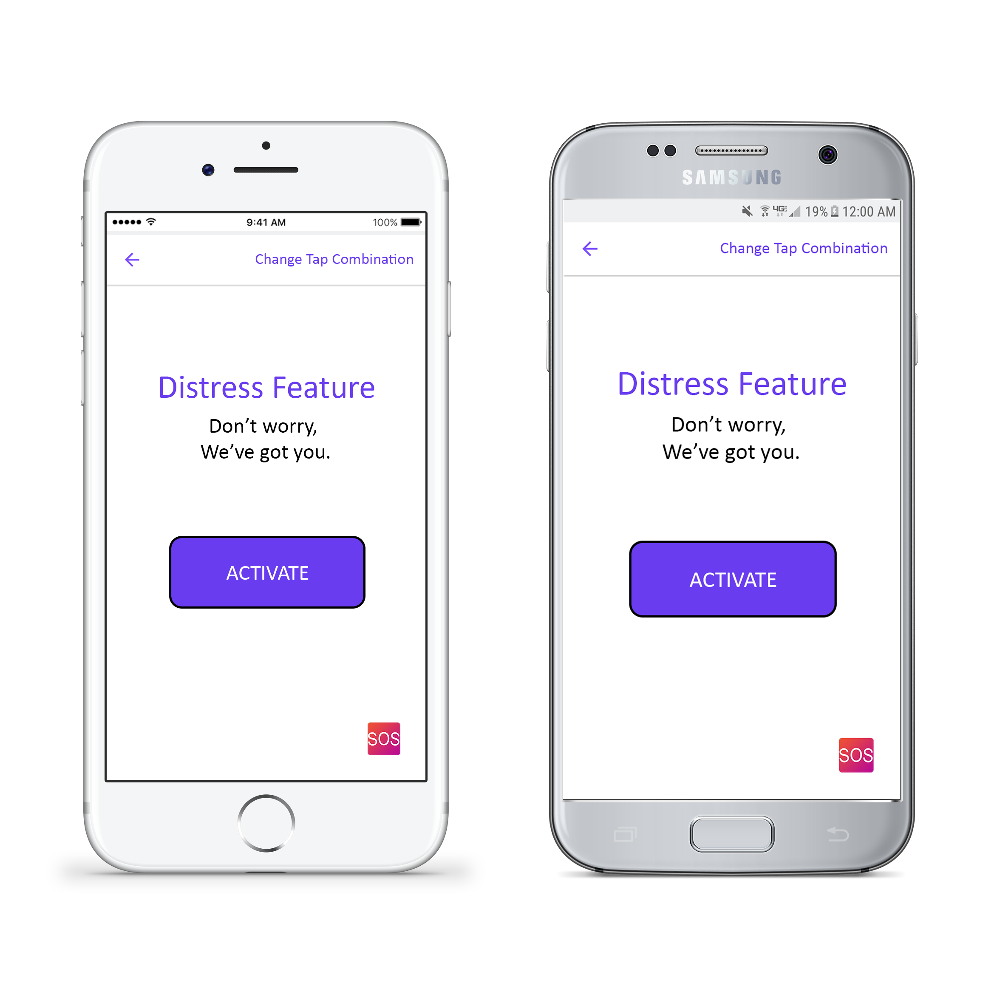

Introducing the Life360 Distress Feature
The distress feature in Life360 was invented to put minds at ease when walking alone at night. The feature allows you to pick friends that will be notified when you enter your programmed distress signal.
Help is just a few taps away...
How to activate the Distress Feature:
1) Open the Life360 app.
2) Create your social circle with people you want notified that you need help.
3) Personalize your fingerprint scanner tap combination.

This can be changed anytime in the app.
4) Activate the Distress Feature.
As long as Life360 is running in the background, your tap combination will override any other home button function.